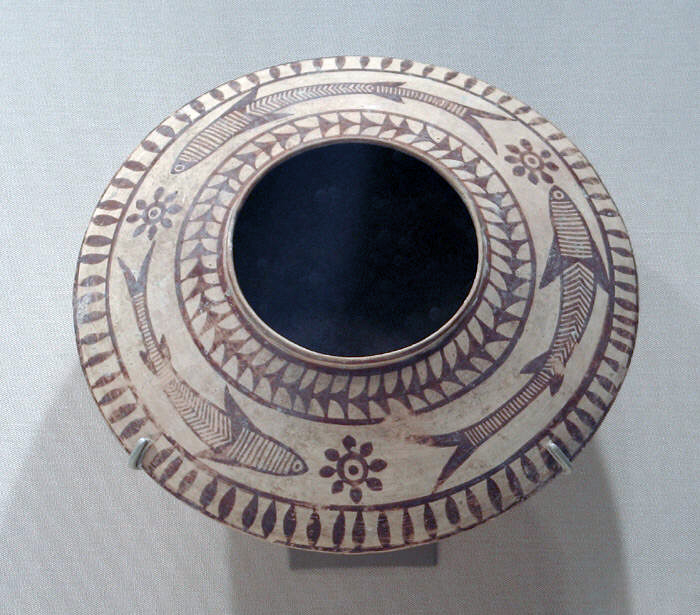

Core Content
EXAM TIP
Discovery: Harappa (1921, Daya Ram Sahni) + Mohenjodaro (1922, R.D. Banerjee) = announced by John Marshall (1924). Period: 2500-1750 BCE (Bronze Age). First urban civilisation in India. Script: undeciphered. Bihar: NOT part of IVC (easternmost site: Alamgirpur, UP).
💡 Deep-dive ready: Complete analysis of IVC sites, town planning, art, trade, decline, and 7 exam predictions:
Indus Valley Master Detail →
A. Key IVC Sites — Comparison EXAM CORE
| Site | State/Country | Discovered by | Year | Key Features |
|---|---|---|---|---|
| Harappa | Punjab (Pakistan) | Daya Ram Sahni | 1921 | First site discovered; granaries; cemetery R37 |
| Mohenjodaro | Sindh (Pakistan) | R.D. Banerjee | 1922 | Largest (until Rakhigarhi); Great Bath; Great Granary; Dancing Girl; Pashupati Seal; Priest-King |
| Lothal | Gujarat | S.R. Rao | 1954 | Port city; dockyard (world's earliest); bead factory; rice cultivation |
| Kalibangan | Rajasthan | Amlanand Ghosh | 1951 | Fire altars; ploughed fields; 'black bangles' |
| Dholavira | Gujarat (Kutch) | J.P. Joshi | 1967 | Reservoirs (water management); signboard; UNESCO (2021) |
| Rakhigarhi | Haryana | Amarendra Nath | 1997 | Largest IVC site in subcontinent (350 ha); DNA studies |
| Chanhudaro | Sindh (Pakistan) | Ernest Mackay | 1931 | Bead-making factory; shell-working; unfortified |
| Banawali | Haryana | R.S. Bisht | 1974 | Pre-Harappan + Harappan; barley + rice; fortified |

Mehrgarh (Balochistan, ~7000 BCE) — the Neolithic precursor to the Indus Valley Civilisation. Shows the transition from hunting-gathering to farming: wheat/barley cultivation, domestication of animals, mud-brick houses. The IVC emerged from this Neolithic base around 2500 BCE.

Indus Valley seals — the most iconic artefacts of the IVC. Made of steatite (soapstone), featuring animals (unicorn, bull, rhino) and the still-undeciphered Harappan script. Over 3,700 seals have been found. The Pashupati Seal (Mohenjodaro) depicts a yogic figure surrounded by animals.
B. Town Planning — Key Features PYQ PATTERN
- Grid pattern: streets crossing at right angles; rectangular blocks
- Citadel + Lower Town: citadel (higher, public buildings — Great Bath, granary) on a mud-brick platform; lower town (residential, shops, workshops)
- Standardised bricks: ratio 4:2:1 (length:width:height); fired (burnt) bricks, not sun-dried
- Drainage system: covered drains along streets; soakpots; waste water from houses connected to street drains — the most advanced drainage system in the ancient world
- House design: houses had a courtyard, well, bathroom, and drains; single entrance from the street; built around the courtyard
- Streets: main streets were 9m wide; narrower lanes branched off; streets divided the city into blocks
C. Key Artefacts EXAM CORE
| Artefact | Site | Significance |
|---|---|---|
| Dancing Girl (bronze, 10.5 cm) | Mohenjodaro | Lost-wax technique; iconic IVC artefact; National Museum Delhi |
| Pashupati Seal (steatite) | Mohenjodaro | Yogic figure surrounded by animals (elephant, tiger, rhino, buffalo, deer); proto-Shiva? |
| Priest-King (soapstone, 17.5 cm) | Mohenjodaro | Fillet on head; trefoil robe; religious leader? National Museum Karachi |
| Unicorn Seal (most common) | All sites | ~60% of all seals; one-horned bull; used for trade/commerce |
| Bearded Man (steatite) | Mohenjodaro | Same as Priest-King; debated identification |
| Great Bath | Mohenjodaro | 12m x 7m x 2.4m; bitumen-sealed; ritual bathing; earliest public water tank |